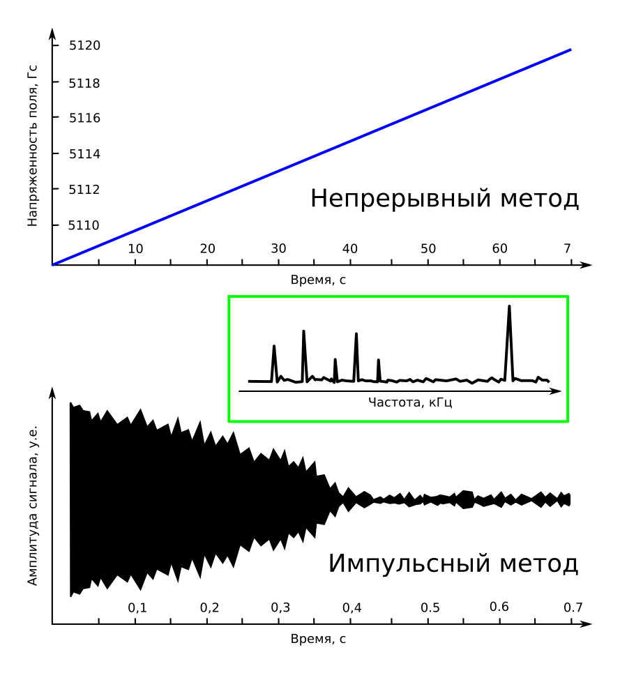

Два метода получения ЯМР
Метод непрерывный развёртки заключается в плавном изменении напряженности внешнего магнитного поля при постоянной наводимой частоте возбуждения ядер (или электронов, если это ЭПР). В момент, когда величина поля такова, что частота возбуждения совпадает с резонансной (ларморовой) частотой спинов, происходит поглощение энергии. В этот момент очень незначительно возрастает нагрузка на генератор. Это падение амплитуды генератора и регистрируется чувствительным элементом прибора.
Надо заметить, что добротность такого спинового резонатора довольно высока. В жидкостях она достигает нескольких тысяч. В то время, как обычные резонансные контуры могут набрать всего пару сотен. Чем выше добротность системы, тем более узок диапазон частот, в котором работает резонанс. Поэтому, если поле менять слишком быстро, то можно просто "проскочить" резонанс и не заметить его.
Кроме управления полем, возможно изменять (разворачивать) частоту возбуждения при постоянном внешнем магнитном поле. И тогда в момент совпадения частоты генератора с ларморовой частотой спиновой системы также происходит поглощение

Сравнение по времени получения двух методов: непрерывного (сверху) и импульсного (снизу). Результат один и тот же в зелёном прямоугольнике - спектр ЯМР.
Импульсный метод очень прост. Он сравним с ударом по камертону и регистрацией сигнала его релаксации. В то время как непрерывный метод аналогичен плавному изменении частоты звукового генератора и регистрации колебаний камертона в момент резонанса. Очевидно, что первый метод менее затратен и аппаратно, и по времени. Существенное отличие реального импульсного ЯМР от приведённой аналогии с камертоном это "удар". Конечно, возможно наблюдать ЯМР после резкого магнитного импульса-удара. Но создать такой "удар" достаточно тяжело. Электромагниты очень инертны, и получить резкий фронт при выключении - задача непростая. Рихард Эрнст, предложивший этот метод, использовал другое свойство спиновой системы - чувствительность макроскопической намагниченности образца к импульсу на резонансной частоте. Оказывается достаточно всего нескольких периодов на резонансной частоте, чтобы повернуть макроскопическую намагниченность образца и установить её перпендикулярно внешнему магнитному полю. Для намагниченности положение поперёк поля не является стационарным. Она начинает релаксировать к положению по полю и при этом наводит в приёмном контуре ЭДС в виде затухающих колебаний на резонансной частоте. Такой метод возбуждения является крайне экономичным и гибким. Варьируя длительностью и амплитудой такого импульса, можно поворачивать суммарную намагниченность на произвольный угол по отношению к вектору внешнего магнитного поля.
Создают целые последовательности из таких разных импульсов, чтобы изменить параметры возбуждения спиновой системы и ослабить или усилить ответ от отдельных взаимодействий между различными ядрами в молекуле.
С появлением импульсного метода коммерческая ЯМР-спектроскопия начала очень быстро развиваться, стала возможной магнитно-резонансная томография.
�